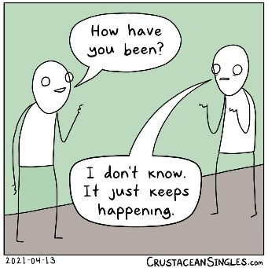

--Alan Watts
"There are not two things there, there is not somebody who wants to be free from fear. That somebody who wants to be free from fear, IS the fear."
--UG Krishnamurti
“There is no self apart from the perceiving. Perceiving is all there is.”
--Adyashanti
I was talking this weekend with a lovely woman who lives a good responsible life, by the book, at all times within her God’s rules. She read me a very long psalm from right there on her phone, trying earnestly to help me understand her world.
Feeling touched by her generosity, in return I gifted her with the information that we (she and I) don’t exist. And not having a psalm, instead I offered her a way to see this for herself.
Yes indeedy.
That went over exactly as well as you might imagine.
Since my friend wasn't too excited about the gift I held out for her, I thought maybe you might want it.
Who knows, maybe you'll enjoy it better.
So start by thinking of a big emotion you don’t like. Anger maybe, or sadness, despair, anxiety, jealousy, humiliation.
Something intense.
Got it? Ok, so here’s the question:
That feeling… what if that’s what you are?
Like, literally.
As in, “I am literally this feeling.”
Not the one feeling it.
Not what's aware of it either.
What if what you are is the feeling itself?
Now usually, right about now, the mind diverts to figuring out if you agree.
Or pivots to brushing away the question with, “Yeah yeah I know this already."
Which is all fine; it just may keep you from receiving your gift.
So set that aside, because it doesn’t matter if you already know or if you agree, and come back.
Just see if it’s possible to slip into that feeling and try on,
BEing it.
BE the sensations.
Be the thoughts about the feeling too.
Even BE the thoughts about this stupid question your friendly Mind-Tickler is making a big deal of, and about whatever other things passing through.
Being all of it.
What if all that experience- this feeling, then that thought, then that one, and that one and that sound and those colors-
is what you are?
Can you see how decentralized that makes you, almost instantly?
How that usual, always-there, strong “sense” of self just...dissipates…
when there’s no feeler, no witnesser, no owner, no controller…
No -er of any kind…
when there’s just experience, happening?
Because if you are experience itself rather than The One doing the experiencing or The Witness who’s aware of the experience…
where exactly is this 'you'?
You is unlocatable. You is center-less. You is everywhere.
Perhaps there’s freedom in this.
Perhaps the usual responsible and centered sense of self has felt so solid all this time because the wrong questions have been asked.
All this time, thought has insisted you’re the one who's asking and you’re the one who's answering and you’re the one who's experiencing.
When maybe instead, all along, you’ve been the experience itself.
Fluid. Fleeting. Present in the extreme. Not a thing. Not solid. Not there.
Not anywhere.
And then you might notice what happens to intense feeling or anything else when it's seen that you are it,
rather than a you who’s supposedly feeling something.
That might be a whole different experience to BE.
Maybe not so urgent. Maybe not so important. Maybe not so wrong. Maybe not so real.
Which coincidentally is something a lot of folks reading The Mind-Tickler happen to want…
Either to feel better, or to truly understand that there is no you, or to be consciousness- the screen, rather than the show on the screen.
Hence, my gift to you.
And though of course this may all seem very weird,
And may bring up your disapproval or disagreement,
I hope you can play with it a little anyway.
Because wouldn't it be wonderful to actually get what you want for a change.
Even if it comes in an un-gift-wrapped, decentralized, no-center kind of gift box.
Which you also
get to Be.
Click here to watch Judy on Buddha at the Gas Pump
“The experience is of consciousness experiencing itself."
–Nisargadatta
"When I was young
I looked at a lampshade
And saw God.
"The lampshade is God," I said.
My parents, good people, said
"Perhaps God is in the lampshade, but God is not the lampshade."
But I knew that God
Was the lampshade,
And the lamp,
And the table beneath the lamp,
And everything else.
And in the moment I said so, I knew who I was."
--Bruce Nygren
